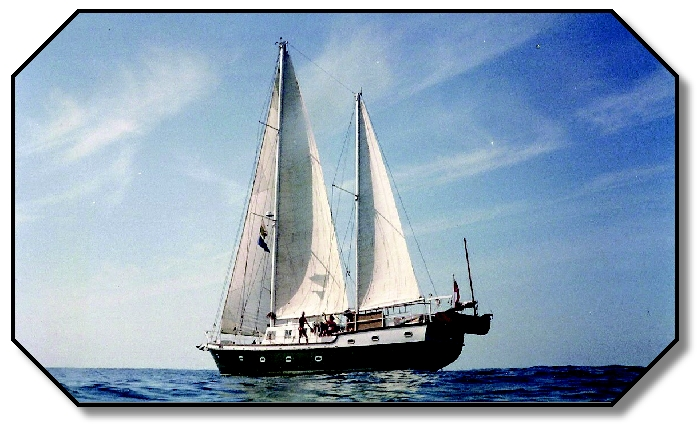

Porto Colom, Majorka
Pisał się rok tysiąc dziewięćset… i coś… ale zostawmy to. Właśnie otworzyły się granice, a ja chciałam poznać świat. Jak? Spakować plecak i w drogę! Wyruszyliśmy więc z chłopakiem – autostopem ku przygodzie. Wszystko było dla nas, nic nie było niemożliwe. Wolność – to kusiło najbardziej.
Autostopem do Hiszpanii, 2 miesiące włóczęgi po tym pięknym kraju, z powrotem do Barcelony. Tam, brudni, wychudzeni i szczęśliwi, zabłądziliśmy do portu i zobaczyliśmy statki. Te wielkie, które płyną na Baleary i dalej. Policzyliśmy drobne i hurra! Mamy akurat na rejs na Majorkę! (no… tylko w jedną stronę, ale komu by to przeszkadzało).
Majorka – miliony turystów, zatłoczone miasto, to nie było to, co sobie wyobrażaliśmy. Chcemy z powrotem. Tyle że jakoś nie mamy nawet na wodę… Co z tym zrobić? Autostop to załatwi…
I tu zdarzył się mały cud. José, kierowca samochodu, który się nam zatrzymał, miał piękny dom otoczony palmowym gajem, polami brzoskwiń i migdałowców, żonę, która nudziła się w tym kamiennym pałacu, oraz łódź w małym porcie na północy. Nie mogliśmy nie skorzystać z jego zaproszenia. Niedola zamieniła się w rozkosz. Nagle byliśmy czyści, najedzeni, mieliśmy własny przepiękny pokój i staliśmy się częścią niezwykłej rodziny (jej historie dałyby materiał na powieść, ale to teraz na bok). Z Martą jeździłyśmy na zakupy i pomagałam jej w domu, opiekowaliśmy się dwuletnią Fiore i czekaliśmy, aż stolarz José wróci wieczorem z portu. Tydzień, dwa. Pożyczyli nam nieużywanego jeepa, objechaliśmy wyspę. Jednym słowem SEN. Tyle że jakoś nie było za co wrócić… I tak José wymyślił plan bojowy: pójdziemy pomagać Peterowi, Anglikowi, który ma w porcie łódź i przygotowuje ją do rejsu dookoła świata.
Piękny pokój zamieniliśmy na kajutę cudownego, zabytkowego żaglowca „Spinning Jenny of Lune". Oto on.
Szorowaliśmy pokłady, malowaliśmy burty naszego Dingi (pontonu z dość mocnym silnikiem, który „dostaliśmy" do własnego użytku), naprawialiśmy, co trzeba było. Po pracy uganialiśmy się po porcie i na otwartym morzu, obserwowaliśmy ławice ryb wyskakujące przed łodzią w górę, wieczorami na brzegu piliśmy sangrię z poszukiwaczami przygód z całego świata, którzy tak jak Peter właśnie zacumowali w Porto Colom, łowiliśmy ryby na lewo, płynęliśmy na sąsiednie wyspy i wysepki, słuchaliśmy niewiarygodnych historii i korzystaliśmy z tego, co najlepszego przyniosło wtedy życie. Ja Dingi jeździłam na zakupy i gotowałam marynarzom (czyli Peterowi i tym, którzy akurat się zjawili). Między innymi knedle morelowe – miały taki sukces, że przewinęła się przez naszą łódź połowa portu, a ja musiałam ten wielki polski (no, czeski 😊) sukces kilka razy powtarzać. Nowa Zelandia, RPA, Kanada, Filipiny… po prostu świat na kolanach przed tym przysmakiem.
Ta bajka, która wydarzyła się naprawdę, zostawiła we mnie miłość do morza, marynarzy, a przede wszystkim do nieskończonej wolności.
Od tamtej pory minęło wiele lat.
Mieszkałam w Hiszpanii w różnych miejscach, poznałam wielkie miasta i zapadłe wsie, mieszkałam w centrum Barcelony, na wyspach, w górach Andaluzji i nad morzem. Ale to właśnie Porto Colom i stary angielski dwumasztowiec na zawsze przypominają mi, dlaczego kiedyś zakochałam się w Hiszpanii.
Bo Hiszpania to nie tylko plaże, hotele i atrakcje turystyczne. To małe porty, gdzie ludzie wciąż znają się po imieniu. To rybackie miasteczka, gdzie za cenę kawalerki w Warszawie możesz kupić cały dom. To przypadkowe spotkania, które zmieniają życie. A czasem także stary statek, na którym gotujesz knedle morelowe dla marynarzy z całego świata.
Właśnie taka Hiszpania interesuje mnie do dziś.
